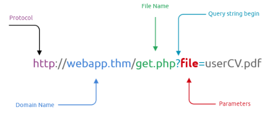

TryHackMe Christmas
Day 1Insecure Direct Object Reference (IDOR) VulnerabilityReal World IDOR/Finding IDOR VulnerabilitiesDay 2Web ServersCookiesDay 3Content DiscoveryDefault CredentialsDay 4AuthenticationFuzzingDay 5Cross-Site Scripting (XSS)Day 6Local File Inclusion (LFI)Identifying and Testing for LFILFI to RCE via Log Files (log poisoning attack)LFI to RCE via PHP SessionsDay 7NoSQLInteracting with MongoDB serverNoSQL InjectionDay 8Powershell Transcription LoggingLiving Off the Land (LOLbin)ShellbagsDay 9WiresharkAnalyze HTTP trafficDay 10Security Assessment (Determine what is vulnerable)NMAP hereDay 11MS SQL ServerDay 12Enumeration/SharesNetwork File System (NFS)Day 13Privileges/Privilege Escalation (Windows)Windows Privilege Escalation VectorsInitial Information GatheringExploitationDay 14CI/CDRisks Associated with CI/CDExampleDay 15Cyber CareersPenetration TesterSecurity AnalystIncident ResponderRed TeamerSecurity EngineerDay 16OSINTOSINT Process CycleAccount Discovery & AnalysisGoogle DorkingBlockChain & OSINTDay 17Cloud Services (Amazon Web Service (AWS))Amazon S3 (Simple Storage Service)Discover Bucket NamesListing the Contents of BucketsDownloading ObjectsLevels of Amazon S3 AuthenticationAWS Identify and Access Management (IAM)Conducting Reconnaissance with IAMDay 18ContainersDockerAWS Elastic Container Registry - ERC Public GalleryPull Repository from AWS ERCRun the Container and InteractSave Downloaded images as a .tar fileDay 19PhishingSigns to look forDay 20Analysis of Suspicous FilesInitial AnalysisVirusTotal
Day 1
Insecure Direct Object Reference (IDOR) Vulnerability
TryHackMe IDOR room here
A type of access control vulnerability, when an attacker can gain access to information or actions not indented for them.
Occurs when a web server receives user supplied input to retrieve objects (file,data,documents). The web application does not validate whether user should have access to the requested object
Real World IDOR/Finding IDOR Vulnerabilities
Seeing a product, user, or service identifier in the URL is a must to test.
Find IDOR Vulnerabilities
Changing user-supplied data
Query Component - data passed in the url when making a request to a website
xxxxxxxxxxhttps://website.com/profile?id=23
^Protocol ^Domain ^Page ^Query component
by changing the query component can we see other users data using a different ID ?
Post Variables - examining the contents of forms on a website can reveal fields that could be vulnerable to IDOR exploitation.
xxxxxxxxxx<form method="POST" action="/update-password"><input type="hidden" name"user_id" value="123"><div>New Password:</div><div><input type="password" name="new_password"></div><div><input type="submit" value="Change Password"></form>
You can see from the input type line above that the users id is being passed to the webserver in a POST request. Can we change this to change a users password?
Cookies - Used to remember your session when connected to a website. webservers securely use these to retrieve user information.
sometimes these may store user information in the cookie itself such as user's ID. Changing the value of the cookie could display user information.
xxxxxxxxxxGET /user-information HTTP/1.1Host: website.thmCookie: user_id=9User-Agent: Mozilla/5.0 (Ubuntu;Linux) Firefox/94.0
Day 2
Web Servers
TryHackMe Web Fundamentals here
HTTPS
client-server protocol to provide communication between a client and a webserver
HTTP adds specific headers to the request to identify the protocol and other information.
Method and target header will always be included
Target header will specify what to receive from the server
Method header will specify how
- When retrieving information from a webserver you commonly use the Get method
- When sending information to a webserver you commonly use the Post method
Status codes tell the client browser how the webserver interpreted the request
HTTP 200 OK
Cookies
used to distinguish your request from someone else's. Identifies different users and access levels.
a tiny piece of meta data containing several types of data determined by the webserver developers
Authentication/session cookies
used to identify you and what access level is attached to your session on the webserver
send a login request to a server
webserver verifies that it received the data and sets/assigns a unique cookie
all future requests will be automatically set with that cookie to identify you and your access level
Once webserver receives future get requests and cookies it will de-seralize your session
Deserialization if the process of taking a data format such as JSON and rebuilding it as an object
There are several components that make up a cookie but we are only worried about the name and value since the others are handled by the webserver
Cookies are always prepared in pairs. name-value and attribute-value
Set-Cookie : Set-Cookie: <cookie-name>=<cookie-value>; Domain=<domain-value>; Secure; HttpOnly
Cookie Manipulation
taking a cookie an modifying it to obtain unintended behavior. They are stored locally on your host system, meaning you have complete control.
Open developer tools in your browser to find your cookies Application tab (Chrome) , Storage tab (Firefox)
- Obtain a cookie value from registering or signing up for an account.
- Decode the cookie value. CyberChef
- Identify the object notation or structure of the cookie.
- Change the parameters inside the object to a different parameter with a higher privilege level, such as admin or administrator.
- Re-encode the cookie and insert the cookie into the value space; this can be done by double-clicking the value box.
- Action the cookie; this can be done by refreshing the page or logging in.
More on authentication bypass here
Day 3
Content Discovery
TryHackMe Content Discovery
the assets and inner workings of the application that we are testing such as files, folders, or pathways.
A useful technique allowing us to find things that were not suppose to see.
- Config files
- Passwords and secrets
- Backups
- Content management systems
- Administrator dashboards or portals
You can manually search for things like admin or passwords.txt or use dirbuster to automatically do this process
a wordlist will contain several common directory/files names to search for on a website, SecLists has a great collection.
Kali default = /usr/share/wordlists
dirb <URL> <wordlist>
Default Credentials
TryHackMe Authentication Bypass
Sometimes devs leave default passwords on portals, its always a good idea to try common username/password combinations.
Day 4
Authentication
A process of identifying a user's identity, establishing that they are who they say they are.
- A known set of credentials to the server and user such as a username and password
- Token authentication (these are unique pieces of encrypted text)
- Biometric authentication (fingerprints, retina data, etc.)
TryHackMe Principles of Security
Fuzzing
An automated means of testing an element of a web application until the application gives a vulnerability or valuable information. Used to test hundreds of credentials or other information using a wordlist to test the web applications response.
Burp Suite Fuzzing
Navigate to the site you want to fuzz
Launch Burp Suite
Navigate to the Proxy Tab and press
Intercept OnBack in Firefox us the FoxyProxy Extension to turn on the Burp Proxy
Enter any random username::password combination
Return to Burp Suite and you should see a post request with some information, including the username and password you entered
Right click the windows with the data and click
sent to intruderInside the Intruder tab:
Click on Positions and clear the pre-selected positions by pressing
clear &Add the username value as the first position and the password value as the second position
Note: you can use a wordlist against usernames and passwords
Select the
Cluster Bombin the "attack type" drop downIn the payloads tab under Payload Options [Simple List] load the wordlist/or type passwords you want to use to fuzz for each set in
Payload SetNow press the
Start Attackbutton, this will being fuzzing the login form.look at the results and sort by length. You can determine failed and successful attempts.
Day 5
Cross-Site Scripting (XSS)
TryHackMe XSS here
An injection attack where malicious JavaScript gets injected into a web application with the intention of being executed by other users
- stealing victims cookies
- running keyloggers
- redirecting
- placing orders
- reseting passwords, etc.
Four different types of XSS
Document Object Model (DOM)
- a programming interface for HTML and XML documents
- represents the page so that programs can change the document structure,sytle, and content
DOM based XSS is when javascript execution happens directly in the browswer without any new pages being loaded. Execution occurs when the websites Javascript code acts on input or user interaction.
Reflected
happens when user-supplied data in an HTTP request is included in the webpage source without any validation
Example could be an error message which is in a query string of an url that is reflected onto the webpage
The error message could be replaced with JavaScript code which gets executed when a user visits the page
xxxxxxxxxxhttps://website.thm/login?error=Username%20Is%20Incorrect
Stored
- The XSS payload is stored on the web application (in a database for example) and then gets ran when other users visit the site
- Example could be a blog, if the message is not properly validated, then every visit to the blog page would run the malicious Javascript code.
Blind
- Similar to stored but you cannot see the payload working or be able to test against yourself first.
- Example could be a contact form, your message could contain an XSS payload, when a member views the message it could be executed
Day 6
TryHackMe file inclusion
Local File Inclusion (LFI)
found on various web applications that allows an attacker to include and read local files on the server. These files could include sensitive data. This happens due to a developers lack of security awareness, and lack of user input validation, which could be chained to Remote Code Execution (RCE)
PHP functions that cause this vulnerability
- include
- require
- include_once
- require_once
Identifying and Testing for LFI
Usually interested in HTTP parameters to manipulate the input and inject attack payloads (GET/POST)
Parameters are query parameter strings attached to the URL that could be used to retrieve data or perform actions based on user input.

Its important to understand how the data is processed within the application. You can then test using manual or automated tools
Example of PHP code that is vulnerable
xxxxxxxxxx<?PHPinclude($_GET["file"]);?>PHP code uses a GET request via the URL parameter file to include a file on the page.http://example.com/index.php?file=secret.txt
Other entry points: User-Agent, Cookies, session, and other HTTP headers
Some examples of Linux system files that have sensative information
xxxxxxxxxx/etc/issue/etc/passwd/etc/shadow/etc/group/etc/hosts/etc/motd/etc/mysql/my.cnf/proc/[0-9]*/fd/[0-9]* (first number is the PID, second is the filedescriptor)/proc/self/environ/proc/version/proc/cmdline
Testing
- A direct file inclusion, which starts with /etc/passwd
- using .. to get out the current directory, the number of .. is varies depending on the web app directory.
- Bypassing filters using ....//.
- URL encoding techniques (such as double encoding)
xxxxxxxxxxhttp://example.thm.labs/page.php?file=/etc/passwdhttp://example.thm.labs/page.php?file=../../../../../../etc/passwdhttp://example.thm.labs/page.php?file=../../../../../../etc/passwd%00http://example.thm.labs/page.php?file=....//....//....//....//etc/passwdhttp://example.thm.labs/page.php?file=%252e%252e%252fetc%252fpasswd
PHP Filter
wrapper is used in LFI to read the actual PHP page content, we can use this filter in encoding formats such as base64 or ROT13
xxxxxxxxxxhttp://10-10-250-88.p.thmlabs.com/index.php?err=php://filter/resource=/etc/passwd
now use base64 encoding
xxxxxxxxxxhttp://10-10-250-88.p.thmlabs.com/index.php?err=php://filter/convert.base64-encode/resource=/etc/passwd
Once you get encoded ouput use www.base64decode.org to decode
PHP Data
used to include raw plain text or base64 encoded data. Used to include images on the current page
xxxxxxxxxxecho "<what you want to encode with base64>" | base64echo "Base64 code" | base64 --decode
Include base64 data into vulnerable page
xxxxxxxxxxhttp://10-10-250-88.p.thmlabs.com/index.php?err=data://text/plain;base64,QW9DMyBpcyBmdW4hCg==
LFI to RCE via Log Files (log poisoning attack)
Include a malicious payload into services log files such as Apache, SSH, etc. then the LFI vulnerability is used to request the page that includes the payload.
Users can include payloads into apache log file via User-Agent (-A) or other HTTP headers, or in the username section of SSH
xxxxxxxxxxTest User-Agentcurl -A "Test" http://10-10-250-88.p.thmlabs.com/index.phpTest User-Agent with PHP payloadcurl -A "<?php phpinfo();?>" http://10-10-250-88.p.thmlabs.com/index.php
Now you can use LFI to view the log file
xxxxxxxxxxhttps://10-10-250-88.p.thmlabs.com/index.php?err=./includes/logs/app_access.log
LFI to RCE via PHP Sessions
PHP sessions are file within the operating system that store temporary information. After the user logs out of the web application the php session information will be deleted
This technique requires enumeration to read the PHP config files first to know where the php session file are.
Common Locations:
- c:\Windows\Temp
- /tmp/
- /var/lib/php5
- /var/lib/php/session
We know from reading the php config from log poisoning that the php sessions are stored in the /tmp directory
Find PHP session file name the default naming scheme: sess_<SESSION_ID>
The session ID can be found in the browser in developer tools (CTRL + SHIFT + i), application tab, Cookies, select target website
PHPSESSID : 3f7dj4vl4u0244807elgug8cb2
the file will be sess_3f7dj4vl4u0244807elgug8cb2 in the /tmp directory
Now you can use LFI to call the session file
xxxxxxxxxxhttps://10-10-250-88.p.thmlabs.com/login.php?err=/tmp/sess_3f7dj4vl4u0244807elgug8cb2
Day 7
NoSQL
a database that refers to non-relational database that is short for non SQl and Not Only SQL. A data-storing and data-retrieving system.
commonly used for big data and IoT devices due to fast queries, ease of use, scalability, and flexible data structure
Databases: MongoDB, Couchbase, RavenDB, etc..
MongoDB , free and popular document store NoSQL database (objects stored in format called BSON, supports JSON data types)
consists of different names compared to MySQL and MSSQL
| MongoDB | MySQL Comparison |
|---|---|
| Collections | Tables |
| Documents | Rows |
| Fields | Columns |
| $and | AND |
| $or | OR |
| $eq | = |
Interacting with MongoDB server
ssh into mongoDB server
type
mongoto connect to server on the localmachine> show databasesthe
usecommand can be used to connect to a database or create oneuse <newdb name>db.createCollection("users")function to create collections(tables) named "users"db.getCollectionName()to view newly created collections(tables)
Create a document within the users collection(table) and insert data
db.users.insert({id: "1", username: "admin", email: "admin@thm.labs", password: "123"})db.users.find()show available information added. MongoDB automatically creates a unique ID
db.users.update({id: "1"}, {set: {username: "admin_new"}});update with new informationdb.users.find()to verify update was successful
db.users.remove({'id':'1'})remove id userdb.users.find()verifydb.users.drop()
NoSQL Injection
Web security vulnerability that allows the attacker to have control over the database. Happens when sending queries via untrusted and unfiltered web applicaiton input, which leads to unauthorized information.
Bypassing Login Pages
connect to database and then look for a certain username and password; if they exist then we have a valid entry.
query:
db.users.findOne({username: "admin_new", password: "123"})- successful returns documents, unsuccessful returns null
Before exploiting there are several operators that we need to be familir with used heavily with injections
| Operator | Description |
|---|---|
| $eq | matches records equal to certain value |
| $ne | not equal |
| $gt | great than |
| $where | based on javascript condition |
| $exists | matches records that have a certain field |
| $regex | satisfy certain regular expressions |
Exploiting the Logic
injecting JSON object which includes one of the NoSQL operators
using $ne in the password field, find a document with the username equal to admin and the password is not equal to xyz, which returns TRUE because the password is not xyz
db.users.findOne({username: "admin", password: {"$ne":"xyz"}})
Eunumerate other fields
db.users.findOne({username: {"$ne":"admin"}, password: {"$ne":"xyz}})
NoSQL injection within the web application
find entry point that does not sanitize user's input
accept user's input as GET orPOST
- inject arrays of th MongoDB operator to match the JSON objection to match the key: value.
http://example.com/search?username=admin&role[$ne]=user- this concept can also be applied to POST requests
you can also utalize JSON as user's input to exploit NoSQL

Using URL to find only roles
Using URL to find users

Day 8
Powershell Transcription Logging
Capture input and output of windows powershell commands. Enabled in group policy, or the Windows registry below:
xxxxxxxxxxreg add HKEY_LOCAL_MACHINE\Software\Policies\Microsoft\Windows\PowerShell\Transcription /v EnableTranscripting /t REG_DWORD /d 0x1 /freg add HKEY_LOCAL_MACHINE\Software\Policies\Microsoft\Windows\PowerShell\Transcription /v OutputDirectory /t REG_SZ /d C:/ /freg add HKEY_LOCAL_MACHINE\Software\Policies\Microsoft\Windows\PowerShell\Transcription /v EnableInvocationHeader /t REG_DWORD /d 0x1 /f
Each transaction log is a simple plain text file. You can see commands and output of everything that was ran with Powershell
Connect to windows with rdp xfreerdp /u:<username> /p:<password> /v:<IP>
Living Off the Land (LOLbin)
use CyberChef to decode
Shellbags
Microsoft registry keeps track of folder settings in order to enchance the users experience in ShellBags. Primary purpose is to improve user experience and remember preferences while browsing folders.
Important for forensics.
Path C:\Users\…..\AppData\Local\Microsoft\Windows
Registry: \HKEY_CLASSES_ROOT\LocalSettings\Software\Microsoft\Windows\Shell\Bags
BagMRU - stores folder names and folder paths, root represented by 0
Bag - view preferences such as size of the window, location, and view mode
ShellBag Explorer - Eric Zimmermans
File > Open offline hive .dat or from Registry
you can see from the decoded .dat file we can see the file structure of the encoded file good for forensics
UHA Archive
similar to ZIP or RAR but faster and with better compression rates.
Day 9
Wireshark
packet analysis used to capture and intercept network traffic that passes the computer's network interfaces. useful for troubleshooting. real-time network packets in human-readable format.
aka "packet sniffer","packet analyzer", "protocol analyzer", or "network analyzer"
5 major components
| Component | Description |
|---|---|
| command menus | standard pulldown menus (file / capture) |
| display filter | specify rules to find certain packets |
| listing of captured packets | shows all sent and recieved network packets (source/destination/protocols) |
| details of selected packet header | details about selected network packets and shows all headers (tcp/udp info) |
| packet content | the packet content in hexadecimal and ASCII format |
Filters
Berkeley Packet Filter (BPF) is used in packet analyzers to filter specific packets pre-capture.
sent or recieved by an IP address ip.addr == <IP>
specify protocol http contains google.com
specify port tcp.port == 3389
you can use not to exclude not tcp.port == 3389
Analyze HTTP traffic
GET
filter : http show all http traffic to and from
get more info by clicking the drop down arrow next to protocol
http.request.method == GET show all get requests
POST
http.request.method == POST follow post request and follow TCP stream (right click > follow)
DNS
udp.port == 53
as you can see from the results there is a request to aoc.tryhackme.com you can see the IP address by double clicking on the answers section. You may also find TXT dns query to follow
FTP
tcp.port == 21 you may also follow stream for more info

Day 10
Security Assessment (Determine what is vulnerable)
Overview of IP Addresses (Logical Address) here
TCP/IP Protocol examples:
- Hypertext Transfer Protocol (HTTP) for serving webpages
- Domain Name System (DNS) for resolving hostnames to IP addresses
- Post Office Protocol version 3 (POP3) for delivering email
- Simple Mail Transfer Protocol (SMTP) for sending email
- Telnet for remote login
- Secure Shell (SSH) for secure remote login
Overview of Ports here
NMAP here
Day 11
MS SQL Server
a Relational Database Management System (RDBMS) is a relational database which is a group of tables that have relations.
Example:

- Enumerate with a
NMAPscan to figure out what port MS SQL is on - Get an interactive database shell using
sqsh -S <IP> -U <username> -P <password> - Get table names
SELECT * FROM <table_name> WHERE <condition>;
SELECT * - return specific columns * means all
FROM <table_name> specify the table you want to read from
WHERE <condition> to specify rows(entities)
go
- Can you run commands (
xp_cmdshellmight be enabled)
xp_cmdshell '<command>'
Day 12
Enumeration/Shares
FInding out what method was used to extract data
Figure out what machine may have unusual traffic and scan it for more information
Nmap nmap -p- <IP> -Pn
Network File System (NFS)
allows for the ablility to transfer files between different computers.
Check files being shared showmount -e <IP>
-e shows the NFS servers export list
Mount the share
mkdir <mountpoint>
mount <IP>:/<share> <mountpoint>
if you want to mount a different share you need to use umount <mountpoint>
MD5 hash : md5sum <file>
Day 13
Privileges/Privilege Escalation (Windows)
privileged accounts will allow specific accesses on the system and make changes.
a "domain" is a central registry used to manage all users and computers within the organization. Its common to manage accounts with grous. a regular user can be added to the Domain Administrators group giving those permissions/privileges.
| Windows Server Account | Description |
|---|---|
| Domain Administrators | highest account level you will find in an enterprise. Can manage all accounts of the organization. |
| Services | used by software to perform their tasks suck as backups or anitvirus scans |
| Domain Users | typically used by employees. just enough privileges to do their daily jobs. |
| Local Accounts | only valid on the local system can not be used over the domain |
Windows Privilege Escalation Vectors
Living off the Land Binaries is an exellent resource for windows privilege escalation.
| Escalation Vector | Information |
|---|---|
| Stored Credentials | Credentials can be saved in files by the user or in a config file |
| Windows Kernel Exploit | Kenerls can have known vulnerabilities that can be exploited |
| Insecure file/folder permissions | Sometime regular users can have read or write privileges that can contain sensative informatoin |
| Insecure Service Permissions | Low privilege users may have right to services allowing them to query/start/or stop a service |
| DLL Hijacking | Applications use DLL files to support their execution. Sometimes even if a DLL is not present it can still be called by the application. Find a DLL the application is looking for in a location we can write to can help us create a malicious DLL file that will be ran by the application |
| Unquoted Service Path | if the executable path of a service contains a space and is not enclosed in quotes. you could introduce your own malicious executables to run instead of the intended executable |
| Always installed elevated | Windows applications can be installed using Windows Installer known as MSI package files. Windows systems can be configures with the "AlwaysInstallElevated" policy, this allows the installation process to run with administrator privileges. A malicious executable packaged as an MSI file could be run to obtain a higher privilege level. |
| Other Software | Software, applications, scripts installed on the target may also provide privilege escalation vectors |
Initial Information Gathering
Finding potential vectors
Users on the system net users
OS Version systeminfo | findstr "OS Name"
Installed Services wmic service list
Exploitation
Find a exploitable service such as Iperius Backup Service
TryHackMe Privilege Escalation Room
Day 14
CI/CD
Two terms that are associated with software development process and DevOps. Best practices that aim to make code delivery faster and more reliable.
CI : Continuous integration, the process in which software source code is kept in a central repository (such as GitHub). All changes are stored in one central location
CD: Continous Delivery (Development), the following step (integral) of the CI model where the code is automatically deployed to the test, pre-production, or production environment.
Risks Associated with CI/CD
As pentesters one of the goals is to uncover weaknesses in the automation process.
Common software used by DevOps teams: Jenkins, GitLab, Bamboo, AWS CodePipeline.
| Major Risk | Description |
|---|---|
| Access Security | Increase number of integration points can make access management difficult. Allowing to much access can open a path for malicious activity |
| Permissions | Components connected to each other and perform tasks with user accounts. |
| Keys and Secrets | Integrations are done using keys (API keys, ID keys) or secrets. These need to be secured. Anyone could potentially access resources using this authentication method |
| User Security | any user who has access to the source code repository could include a malicious component in the code base and could be included in the deployed application. |
| Default Configurations | If default creds are not changed, and used within CI/CD process this could result in a complete compromise. |
Example
A website implementing (CI/CD)
Enumerate with dirb to find any interesting directories
dirb http://10.10.56.67
xxxxxxxxxx+ http://10.10.56.67/admin (CODE:200|SIZE:363)+ http://10.10.56.67/index.html (CODE:200|SIZE:169)+ http://10.10.56.67/server-status (CODE:403|SIZE:276)+ http://10.10.56.67/warez (CODE:200|SIZE:606)
Source code shows (/admin) a iframe that points to ls.html.
ssh <username>@10.10.56.67
looking at thegrinches scripts in his home folder we get a better idea of what the ls.html is doing.
We do have write permissions so we can edit the script (loot.sh) to print the contents to /etc/shadow, this can also be used to escalate privileges
xxxxxxxxxx#!/bin/bashcat /etc/shadow > /var/www/html/ls.html
Refresh the /admin page to see this in effect. Edit loot.sh to show the contents of the other files we do not have access to.
xxxxxxxxxx#!/bin/bashcat /home/thegrinch/script/check.sh > /var/www/html/ls.html
Issues Observed
xxxxxxxxxxFolder permissions that were too lax: The low privileged McSkidy user could write to the Grinch's "loot" folder.File permissions were misconfigured: The low privileged McSkidy user could change the contents of the loot.sh script.Improper key protection: In this example, Grinch's password can be seen as the secret key used to connect CI/CD components. If the key can be read from a configuration file, the attacker can reuse this key to their advantage.Installation was not secure: cronjobs were regularly running tasks without any controls for unauthorized changes. As you may have read in sector news, a similar lack of controls has led to the release of backdoored software.
Day 15
Cyber Careers
Penetration Tester
Responsible for testing technology products for security loopholes.
You may see penetration testing referred to as pentesting and ethical hacking. A penetration tester’s job role is to test the security of the systems and software within a company - through attempts to uncover flaws and vulnerabilities through systemised hacking. Penetration testers exploit these vulnerabilities to evaluate the risk in each instance. The company can then take these insights to rectify issues to prevent a real-world cyber attack.
Responsibilities
- Conduct tests on computer systems, networks, and web-based applications
- Perform security assessments, audits, and analyse policies
- Evaluate and report on insights, recommending actions for attack prevention
TryHackMe Learning Paths - Pre Security, Offensive Pentesting, Jr Penetration Tester
Security Analyst
Responsible for maintaining the security of an organisation's data
Security analysts are integral to constructing security measures across organisations, protect the company from attacks. Analysts explore and evaluate company networks to uncover actionable data and recommendations for engineers to develop preventative measures. This job role requisites working with various stakeholders to gain an understanding of security requirements and the security landscape.
Responsibilities
- Working with various stakeholders to analyse the cyber security throughout the company
- Compile ongoing reports about the safety of networks, documenting security issues and measures taken in response
- Develop security plans, incorporating research on new attack tools and trends, and measures needed across teams to maintain data security
TryHackMe Learning Paths - Pre Security, Cyber Defense, Jr Penetration Tester
Incident Responder
Identifies and mitigates attacks whilst an attackers operations are still unfolding
Incident responders respond productively and efficiently to security breaches. Responsibilities include creating plans, policies, and protocols for organisations to enact during and following incidents. This is often a highly pressurised position with assessments and responses required in real-time, as attacks are unfolding. Incident response metrics include MTTD, MTTA, and MTTR - the meantime to detect, acknowledge, and recover (from attacks.) The aim is to achieve a swift and effective response, retain financial standing and avoid negative breach implications. Ultimately, incident responders protect the company’s data, reputation, and financial standing from cyber attacks.
Responsibilities
- Developing and adopting a thorough, actionable incident response plan
- Maintaining strong security best practices and supporting incident response measures
- Post-incident reporting and preparation for future attacks, considering learnings and adaptations to take from incidents
TryHackMe Learning Paths - Pre Security, Cyber Defense, Jr Penetration Tester
Red Teamer
Plays the role of an adversary, attacking an organisation and providing feedback from an enemies perspective.
Red teamers share similarities to penetration testers, with a more targeted job role. Penetration testers look to uncover many vulnerabilities across systems to keep cyber-defence in good standing, whilst red teamers are enacted to test the company’s detection and response capabilities. This job role requires imitating cyber criminals’ actions, emulating malicious attacks, retaining access, and avoiding detection. Red team assessments can run for up to a month, typically by a team external to the company. They are often best suited to organisations with mature security programs in place.
Responsibilities
- Emulate the role of a threat actor to uncover exploitable vulnerabilities, maintain access and avoid detection
- Assess organisations’ security controls, threat intelligence, and incident response procedures
- Evaluate and report on insights, with actionable data for companies to avoid real-world instances
TryHackMe Learning Paths - Pre Security, Jr Penetration Tester, Offensive Pentesting
Security Engineer
Design, monitor and maintain security controls, networks, and systems to help prevent cyber attacks
Security engineers develop and implement security solutions using threats and vulnerability data - often sourced from members of the security workforce. Security engineers work across circumventing a breadth of attacks, including web application attacks, network threats, and evolving trends and tactics. The ultimate goal is to retain and adopt security measures to mitigate the risk of attack and data loss.
Responsibilities
- Testing and screening security measures across software
- Monitor networks and reports to update systems and mitigate vulnerabilities
- Identify and implement systems needed for optimal security
TryHackMe Learning Paths - Pre Security, Jr Penetration Tester, Offensive Pentesting
Day 16
OSINT
Open Source Intelligence, information that can be obtained from free and public sources.
Clearnet refers to anything you can publicly access from a traditional web browser
- GitHub
Darknet accessed using special software, commonly used by privacy-minded people.
- TOR
- Freenet
- I2P
- IPFS
- Zeronet
OSINT Process Cycle
RIS OSINT
Data-information model

Roller Coaster phases

| RSI Phase | Definition | Example |
|---|---|---|
| Client | What is the question/objective? | |
| Source | What is available on the objective? | Email servers, etc. |
| Monitoring | What is happening with the objective? | Email has been inactive |
| Selecting/Finding | Where is the objective? How can we find/identify the objective? | Clearnet, Gmail, etc. |
| Acquisition | How can we get the objective? | Leaked database |
| Indexing | How is the objective retrievable? | Dehashed |
| Syntheses | How can we combine this objective with others? | Identify information from email |
| Dissemination | How can you action/quantify this objective? | Report/Plan |
Account Discovery & Analysis
| Objective | Purpose |
|---|---|
| Identify real or personas | A target will often use a persona. Depending on initial information, we are looking for their real name or persona to find other accounts. Our end objective is to identify further information and accounts owned by our target. |
| Identify email | This is less common to find openly but can help identify further information of the target and other sources. |
| Locate linked accounts | Targets will often link other public accounts leading you to further information or their real name/persona. |
| History | The importance of a target's post history will depend on your objective. This could be crucial to your investigation and lead you to what they're doing or pivot to another resource. |
| Information from posts | Continuing from a target's post history, you can obtain various information from a target's posts. This can include location, other accounts, real name, interests, etc. |
Google Dorking
Cheetsheets
- https://www.sans.org/posters/google-hacking-and-defense-cheat-sheet/
- https://gist.github.com/sundowndev/283efaddbcf896ab405488330d1bbc06
| Term | Purpose | Example |
|---|---|---|
| site | Specifically searches that particular site and lists all the results for that site. | site:"www.google.com" |
| filetype | Searches for a particular filetype mentioned in the query. | filetype:"pdf" |
| link | Searches for external links to pages. | link:"keyword" |
| inurl | Searches for a URL matching one of the keywords. | inurl:"keyword" |
| before/after | Used to search within a particular date range. | (before:2000-01-01 after:2001-01-01) |
BlockChain & OSINT
- Blocktrail
- Bitcoin Who's Who
- Graphsense
- Block Explorer
Day 17
Cloud Services (Amazon Web Service (AWS))
AWS is one of the leading public cloud providers and two of its most common services are Amazon S3 (Simple Storage Server) and AWS IAM (Identify and Access Managment)
Major enterprises leverage AWS in some form or another for Computer services, big data or machine learning, Data archives, Video Streaming, IoT, etc..
AWS divides its infrastructure into Regions, each region has its availability zones (AZ). This adds redundancy establishing highly resilient architecutes to withstand hardware or facility failures. Specify region with the --region option in AWS CLI
Getting Started with AWS CLI
You can access AWS via the AWS Console, AWS CLI, AWS API, or SDKs for programming languages
Amazon S3 (Simple Storage Service)
Publicly hosted object storage service. Objects are stored in Buckets. Key-value stores, with the Object Key being a full pathname for a file and the value being the contents of the file.
Can be used for more than public hosting such as data archives, video processing, regulatory record retention, etc.
Buckets use a global namespace. meaning names cannot be replicated.
Discover Bucket Names
The links of images, pdf, etc. would look somthing like this
xxxxxxxxxxhttp://<bucketname>.s3.amazonaws.com/<filename>http://s3.amazonaws.com/<bucketname>/<filename>
Listing the Contents of Buckets
Examples
curl http://irs-form-990.s3.amazonaws.com/
aws s3 ls s3://irs-form-990/ --no-sign-request
--no-sign-request allows you to request data without being a AWS customer
Downloading Objects
xxxxxxxxxx#Curlcurl http://irs-form-990.s3.amazonaws.com/201101319349101615_public.xml#AWS CLIaws s3 cp s3://irs-form-990/201101319349101615_public.xml . --no-sign-request
Levels of Amazon S3 Authentication
Object permissions are different from Bucket permissions. Objects can be readable while the bucket is not, or vise-versa.
Bucket permissions allow you to list the objects in a bucket. The Objects permissions will enable you to download the object.
| ACL Name | BUCKET | OBJECT |
|---|---|---|
| Anyone | Anonymously list contents ofthe bucket via curl or with aws s3 ls --no-sign-request | Ability to download via curl or aws s3 cp --no-sign-request |
| AuthenticatedUsers | Can only list the bucket with active AWS keys via aws s3 ls | You can only download the object with active AWS Keys via aws s3 cp |
AWS Identify and Access Management (IAM)
All requests to AWS services must be signed. Usually done behind the scenes by the AWS CLI. The signing process leverages IAM access keys.
IAM Access Keys consist
Access Key ID
Begin with the letters AKIA and are 20 characters long. Act as a username for the AWS API.
Short-Term credentials - the Access Key ID begins with ASIA and includes a Session Token
Secret Access Key
40 characters long.
AWS generates both strings, but does not make the Secret Access Key available for download after initial generation
Conducting Reconnaissance with IAM
add found credentials to your AWS profile with the AWS CLI
aws configure --profile <profilename>
this command adds entries to the .aws/config and .aws/credentials files in the users home directory
Once configured you can execute commands using this other set of credentials
aws s3 ls --profile <profilename>
xxxxxxxxxx#Finding the Account ID belonging to an access key:aws sts get-access-key-info --access-key-id AKIAEXAMPLE --profile <profilename>#Determining the Username the access key you're using belongs toaws sts get-caller-identity --profile PROFILENAME#Listing all the EC2 instances running in an accountaws ec2 describe-instances --output text --profile PROFILENAME#Listing all the EC2 instances running in an account in a different regionaws ec2 describe-instances --output text --region us-east-1 --profile PROFILENAME
AWS ARNs
A way of generating a unique identifier for all resources in the AWS cloud.
arn:aws:<service>:<region>:<account_id>:<resource_type>/<resource_name>
Secretsmanager
aws secretsmanager -list-secrets --profile <profilename>
aws secretsmanager -get-secret-value --secret-id <name> --profile <profilename> --region <specify region>
Day 18
Containers
virtualization mechanism similiar to Virtual Machines (VMs), container images are based on the Open Container Initiative Distribution Specification. cloud-native computing environment, first-choice solution for deploying infrastructure.
Docker
Container images are built from a source file known as a 'Dockerfile'. Dockerfiles are a list of new-line seperated instructions that instruct the docker daemon how to generate the container image.
| Name | Description |
|---|---|
| Docker API | local communication interface on a configured linux machine, wtih standardized commands used to communicate wtih a docker daemon |
| Docker Daemon | process that runs on your machine, to interact with container components such as images, data volumes, and other container artifacts |
| Docker Container Image Format | a .tar file. Compliant with the OCI Image Specification |
AWS Elastic Container Registry - ERC Public Gallery
An online registry for public and private container images.
Retrieving and inspecting the elements of a container images to identify potential security issues.
docker images see container images that are stored
Docker containers are stored in repositories, which are a reference to file mappings the Docker Daemon knows how to reach which included the .tar files.
xxxxxxxxxxREPOSITORY TAG IMAGE ID CREATED SIZEremnux/ciphey latest ec11b47184f6 9 months ago 177MB
Pull Repository from AWS ERC
docker pull <repository name>
Run the Container and Interact
docker run -it <repository>
This will give you an interactive shell on the container. You can then conduct reconnaissance
Check environment variables, these may be used to store secret or other sensitive information used to configure the container
printenv
Perhaps an api key api_key=a90eac086fd049ab9a08374f65d1e977
Save Downloaded images as a .tar file
once you save images as a .tar and extract the contents you can see the various image layers. the 'manifest.json' represents the layers that compose of the container. Use jq for a better looking ouput
mdkir <directory>
docker save -o <name>.tar <repository>
tar -xf <name>.tar
cat manifest.json | jq
find the config .json file and show contents with jq
cat f886f00520700e2ddd74a14856fcc07a360c819b4cea8cee8be83d4de01e9787.json | jq
the file walks through the final image configuration as intented to run on a container host system
look through the configuration to see any interesting tools that you can research for vulnerabilities, be sure to look in other layer directories for interesting files or .tars. Look in config files for secrets/tokens/sensative information.
Day 19
Phishing
attempt to infiltrate a target organization and gain a foothold by sending electronically delivered messages. A form of social engineering. phishing can also be targeting a specific person, company or industry known as spearphishing.
These emails often contain malicious attachments or links, typically executing malicious code on the victims system.
Signs to look for
Do you know the sender ? Does the email address match the sender? Does the reply-to email match the sender ?
Does the email body greet you personally or is it very generic. Are there any grammer mistakes?
Does the email give you a sense of urgency such as a deadline or prevent your account from being disabled?
Does the email contain a link that redirects you to a website, perhaps to reset a password? Does the link match the sender?
Is there an attachment to the email ?
View/inspect source or View Headers
typically in the options, or use Inspector mode
Decode base64 cat <filname> | base64 -d
save it as a pdf by adding > file.pdf
you can tell by the magic header that the file is PDF based. Also CyberChef can help with identifying file types
%PDF-1.6
Day 20
Analysis of Suspicous Files
Remnux A popular Blue/team analysis OS/VM
Initial Analysis
file <file> a linux command that helps determine a given file's file type.
strings <file> this command extracts and prints the printable character sequence from a given file. Knowing what strings are present in a file can often provide interesting information about the file (IPs, domain names, URLs, command execution hints, etc.). They also help antivirus software in flagging files.
VirusTotal
A website that will can files, URLs, Ip addresses, Domains, or a file hash and displays a summary of the scan results from over 60 different Antivirus software products
Various options include tabs: Detection, Details, Relations, Behavior, and Community comments
md5sum <file> used to ouput the MD5 has of a file, then it can be searched on in VirusTotal